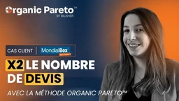

Un flux régulier de demandes venues de Google et des IA, tous les jours, sur tout votre marché.
Notre équipe prend en main tout votre référencement. Vous suivez chaque mois les appels, les demandes et le chiffre d'affaires que ça vous rapporte.
Vous avez déjà vu ce que Google peut vous apporter et vous voulez accélérer. Ou vous vendez partout en France et vous avez besoin de toute la puissance du référencement, tout de suite.
On ne travaille plus seulement votre métier principal : on prend tout votre marché, local, national ou international, tous vos services, et on garde vos meilleures pages dans le top 3 de Google et dans les réponses des IA.
Aujourd'hui dans le top 3 des références du référencement naturel en France. Ingénieur sorti major de sa promotion, formé à l'intelligence artificielle à Stanford, en Californie, l'université des fondateurs de Google. Ancien responsable du référencement de Canal+, La Halle et Adopt' Parfum, fondateur d'Organic Pareto™.
Speaker dans les plus grandes conférences de référencement et de marketing digital au monde : France, Pologne, Espagne, États-Unis, Canada, Côte d'Ivoire, Sénégal.



On construit votre stratégie, puis on l'exécute
On déploie votre présence partout
On mesure, et on reste à vos côtés
Ils ont réussi avec Partner
